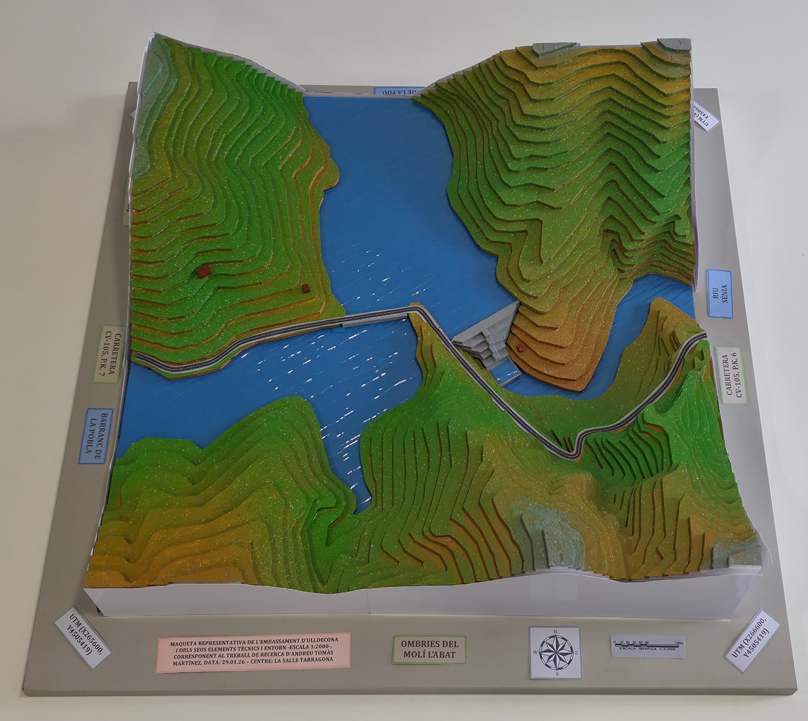
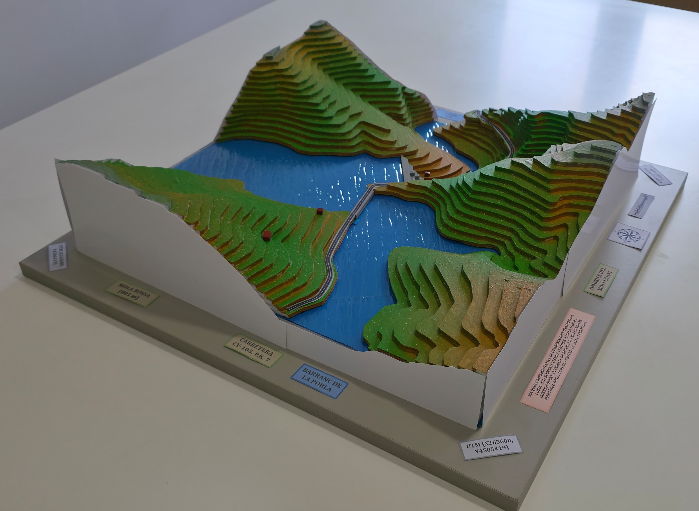
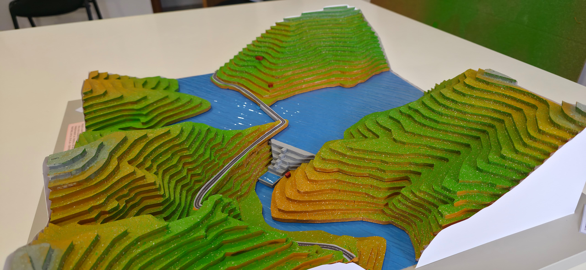
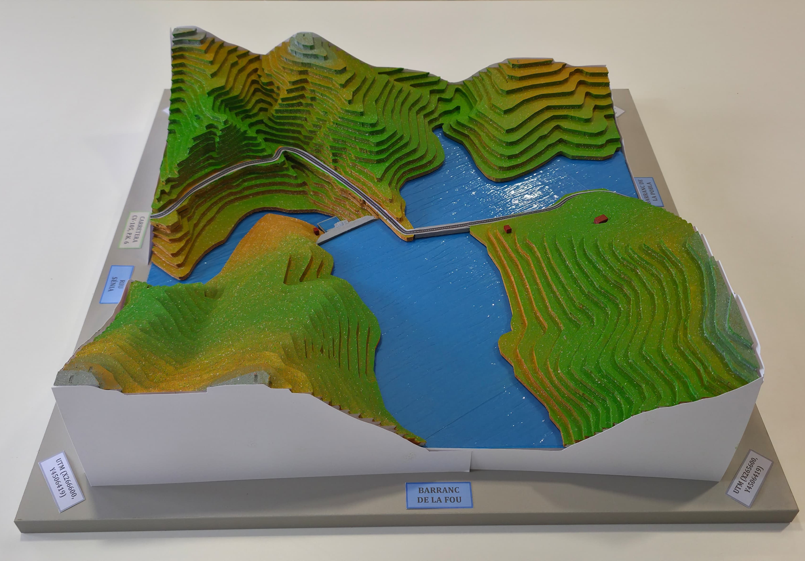
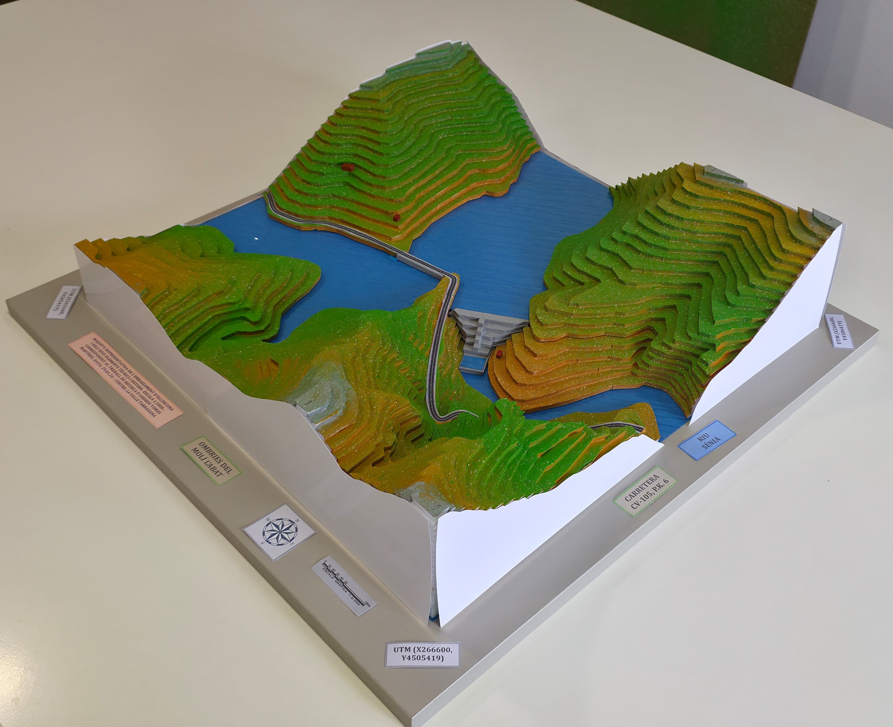
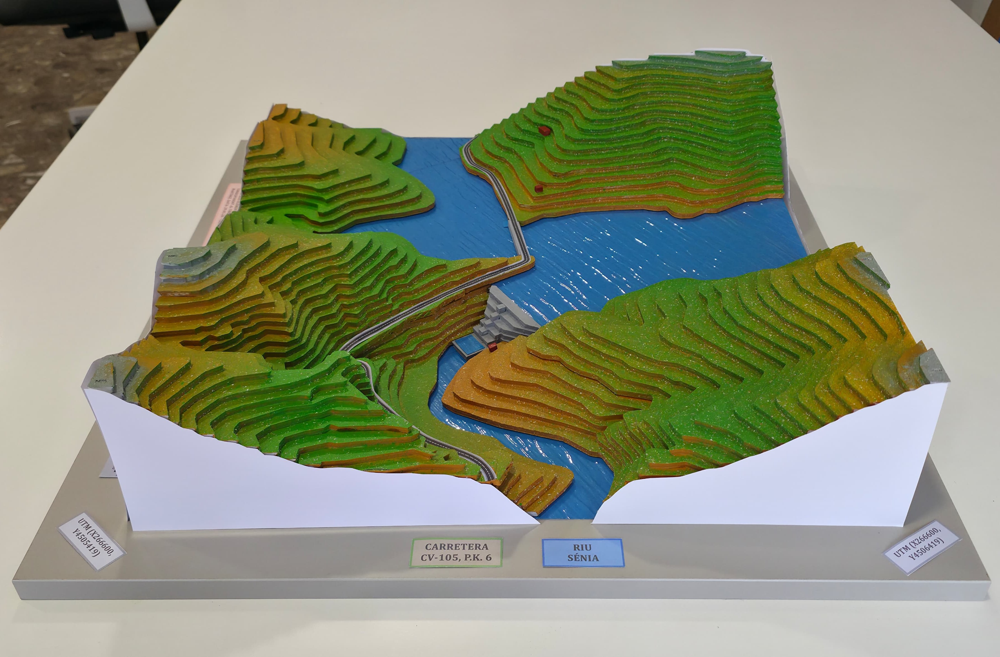

La maqueta de l’embassament d’Ulldecona serveix per representar de manera visual i tangible la seva estructura, funcionament i entorn, ajudant a entendre millor les característiques del pantà i facilitant l’explicació dels aspectes estuditats al teu TDR.




